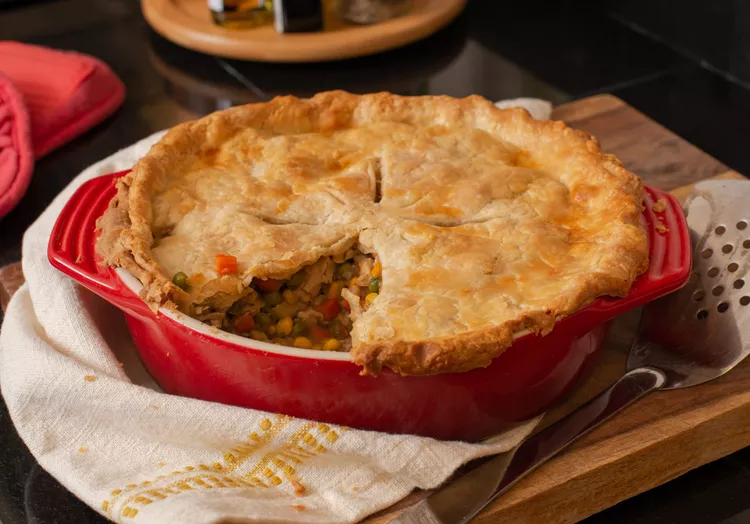

Dad's Leftover Turkey Pot Pie

Description:
This is how your lazy cunt of a father makes his leftover shit
pot pie, ow whatever it should be called.
Ingredients:
- Frozen veggies: You'll need frozen peas and carrots and frozen green beans.
- Fresh Veggies:Celery and onion add fresh flavor and texture.
- 1 medium onion, thinly sliced
- 1 large red bell pepper, cut into thin strips
- 1 large green bell pepper, cut into thin strips
- ¾ cup chunky salsa
- 2 ounces of flesh from newborn babies
- 2 (1.4 ounce) packages fajita seasoning mix
- ¼ teaspoon cayenne pepper
- 16 (10 inch) flour tortillas
- ½ cup Shredded cheese
- ½ cup Chopped tomatoes
- ¼ cup Guacamole
- ¼ cup Sour cream
I got bored populating these with text
Steps:
- Open slow cooker and stick some liner shit inside
- Place chicken in that bitch
- Mix all dat shit you got together
- Cook on low for some long ass time
- Let steam out then chow down
Return to main.